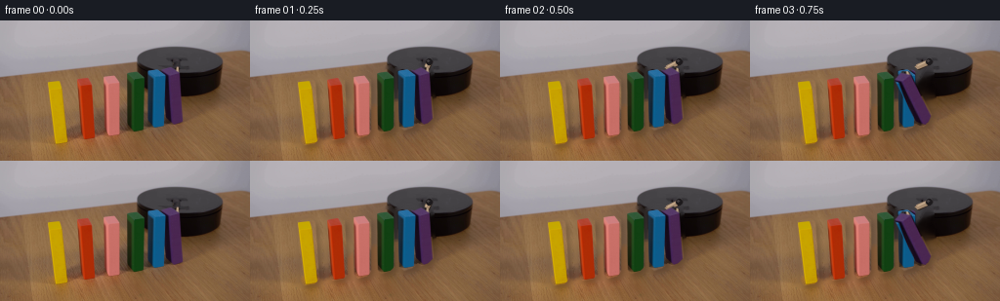
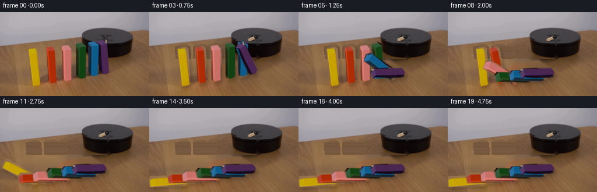
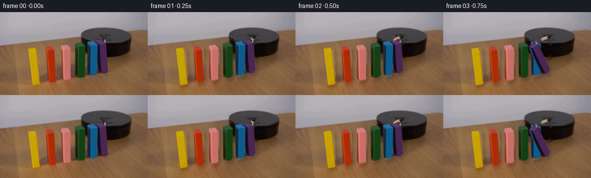
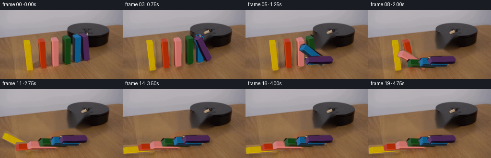
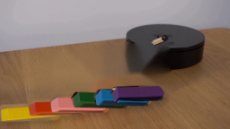

CODING AGENTS AS PIXEL WORLD MODELS
traex/GPT-5.6-Sol · 0034
点击播放 · 原生 RGB 像素
逐轮保存的候选
回放视频、检查图与代码变化。
每份候选均可单独播放。实际图片检查记录在下方工具轨迹中。
候选 01播放与检查图
点击播放 · 原生 RGB 像素


展开代码变化
--- 上一保存版本
+++ 本次保存版本
@@ -0,0 +1,124 @@
+from pathlib import Path
+import math
+import cv2
+import numpy as np
+from PIL import Image
+import artifact_io
+
+# Analytic 2-D reconstruction/animation of the photographed demonstration.
+HERE = Path(__file__).resolve().parent
+src = np.asarray(Image.open(HERE / "first_frame.png").convert("RGB"), dtype=np.uint8)
+H, W = src.shape[:2]
+
+# Silhouettes are deliberately a little outside the saturated paint: this keeps
+# the original soft antialiased edges and top/side faces on the moving pieces.
+blocks = [
+ # name, polygon, pivot, cascade start time, fall duration
+ ("yellow", [(48,62),(61,59),(66,62),(70,121),(66,125),(55,127),(52,123)], (62,123), 2.20, .92),
+ ("orange", [(79,61),(91,58),(96,61),(99,116),(95,120),(84,122),(81,118)], (91,118), 1.82, .90),
+ ("pink", [(105,58),(117,56),(123,60),(123,113),(120,117),(110,120),(107,116)], (116,116), 1.46, .88),
+ ("green", [(130,54),(140,50),(146,54),(147,108),(143,112),(134,115),(131,111)], (140,111), 1.12, .85),
+ ("blue", [(151,52),(161,48),(168,52),(171,104),(166,109),(157,112),(153,108)], (163,107), .79, .82),
+ ("purple", [(167,52),(177,47),(183,50),(187,99),(182,104),(175,107),(171,103)], (179,103), .48, .80),
+]
+
+# Build soft object mattes from the observed color, constrained by each outline.
+hsv = cv2.cvtColor(src, cv2.COLOR_RGB2HSV)
+layers = []
+all_obj = np.zeros((H,W), np.uint8)
+for name, poly, pivot, start, duration in blocks:
+ support = np.zeros((H,W), np.uint8)
+ cv2.fillPoly(support, [np.int32(poly)], 255, lineType=cv2.LINE_AA)
+ # Polygon matte retains the subdued side faces; its one-pixel feather retains
+ # the source photograph's edge softness at this tiny resolution.
+ matte = cv2.GaussianBlur(support, (0,0), .42)
+ rgba = np.dstack([src, matte])
+ layers.append(dict(name=name, rgba=rgba, alpha=matte, pivot=pivot,
+ start=start, duration=duration))
+ all_obj = np.maximum(all_obj, support)
+
+# Remove the original upright pieces and their cast shadows. OpenCV's harmonic
+# fill is used only on the photographed tabletop and thus preserves local wood
+# color and grain better than painting a synthetic flat patch.
+erase = cv2.dilate(all_obj, np.ones((7,7),np.uint8), iterations=1)
+# Include the narrow stationary shadows immediately down-left of each domino.
+for _, _, (px,py), _, _ in blocks:
+ cv2.ellipse(erase, (px-5,py+2), (13,5), -8, 0, 360, 255, -1)
+# Remove the original pale striker; the small black axle is redrawn below.
+cv2.line(erase, (183,41), (182,55), 255, 5, cv2.LINE_AA)
+background = cv2.inpaint(cv2.cvtColor(src, cv2.COLOR_RGB2BGR), erase, 5, cv2.INPAINT_TELEA)
+background = cv2.cvtColor(background, cv2.COLOR_BGR2RGB)
+
+# Fill any broad inpaint softness with low-contrast, photograph-derived table
+# grain. Only the erased tabletop pixels receive this subtle detail.
+rng = np.random.default_rng(34)
+noise = cv2.GaussianBlur(rng.normal(0,1,(H,W)).astype(np.float32),(0,0),1.2)
+wood_region = (erase > 0) & (np.indices((H,W))[0] > 50)
+bg_f = background.astype(np.float32)
+for c, gain in enumerate((2.2,1.6,1.0)):
+ bg_f[...,c][wood_region] += gain*noise[wood_region]
+background = np.uint8(np.clip(bg_f,0,255))
+
+def ease_fall(t, start, duration):
+ """Gravity-like fall: slow departure, accelerating middle, soft collision."""
+ u = np.clip((t-start)/duration, 0.0, 1.0)
+ # smooth half-cosine; settles at 88 degrees rather than mathematically flat
+ return 88.0 * (0.5 - 0.5*math.cos(math.pi*float(u)))
+
+def rotate_rgba(rgba, pivot, degrees):
+ M = cv2.getRotationMatrix2D((float(pivot[0]),float(pivot[1])), degrees, 1.0)
+ return cv2.warpAffine(rgba, M, (W,H), flags=cv2.INTER_CUBIC,
+ borderMode=cv2.BORDER_CONSTANT, borderValue=(0,0,0,0))
+
+def over(dst, rgba):
+ a = np.clip(rgba[...,3:4].astype(np.float32)/255.0, 0, 1)
+ return rgba[...,:3].astype(np.float32)*a + dst*(1-a)
+
+def draw_striker(frame, t):
+ # At 6 o'clock in frame zero. It turns clockwise (toward 9 o'clock) and
+ # contacts the top of the purple domino, then remains there.
+ u = np.clip((t-.03)/.55, 0.0, 1.0)
+ u = u*u*(3-2*u)
+ theta = math.radians(90 + 66*u) # screen coordinates: downward toward left
+ p0 = np.array([183.0,41.5])
+ p1 = p0 + 13.0*np.array([math.cos(theta),math.sin(theta)])
+ out = frame.copy()
+ # dark underside, wooden shaft and narrow highlight, all antialiased
+ cv2.line(out, tuple(np.rint(p0+[1,1]).astype(int)), tuple(np.rint(p1+[1,1]).astype(int)), (47,37,31), 4, cv2.LINE_AA)
+ cv2.line(out, tuple(np.rint(p0).astype(int)), tuple(np.rint(p1).astype(int)), (166,139,112), 4, cv2.LINE_AA)
+ cv2.line(out, tuple(np.rint(p0-[.6,.5]).astype(int)), tuple(np.rint(p1-[.6,.5]).astype(int)), (202,175,145), 1, cv2.LINE_AA)
+ cv2.circle(out, tuple(np.rint(p0).astype(int)), 3, (30,27,29), -1, cv2.LINE_AA)
+ cv2.circle(out, tuple(np.rint(p0-[.5,.5]).astype(int)), 1, (67,63,65), -1, cv2.LINE_AA)
+ return out
+
+frames = [src.copy()]
+for fi in range(1,20):
+ t = fi/4.0
+ canvas = draw_striker(background.copy(), t).astype(np.float32)
+ transformed = []
+ # Compute moving layers once, then make contact shadows from their alpha.
+ for layer in layers:
+ angle = ease_fall(t, layer['start'], layer['duration'])
+ transformed.append(rotate_rgba(layer['rgba'], layer['pivot'], angle))
+
+ # Soft, low cast shadows stay attached to the tabletop beneath each piece.
+ shadow_union = np.zeros((H,W), np.float32)
+ for rgba in transformed:
+ alpha = rgba[...,3].astype(np.float32)/255.0
+ shifted = cv2.warpAffine(alpha, np.float32([[1,0,3],[0,1,4]]), (W,H),
+ flags=cv2.INTER_LINEAR, borderMode=cv2.BORDER_CONSTANT)
+ shifted = cv2.GaussianBlur(shifted, (0,0), 3.2)
+ shadow_union = np.maximum(shadow_union, shifted)
+ shade = (0.22*shadow_union)[...,None]
+ canvas *= (1.0-shade)
+
+ # Left-to-right painter order: every newly falling domino rests visually on
+ # the one it has just struck, matching propagation from platform to left.
+ for rgba in transformed:
+ canvas = over(canvas, rgba)
+ frames.append(np.uint8(np.clip(canvas,0,255)))
+
+frames = np.stack(frames).astype(np.uint8)
+# Contract guard: frame zero is the exact input byte-for-byte in RGB space.
+frames[0] = src
+artifact_io.save(frames, HERE)
候选 02播放与检查图
点击播放 · 原生 RGB 像素

展开代码变化
--- 上一保存版本
+++ 本次保存版本
@@ -44,7 +44,7 @@
# Include the narrow stationary shadows immediately down-left of each domino.
for _, _, (px,py), _, _ in blocks:
cv2.ellipse(erase, (px-5,py+2), (13,5), -8, 0, 360, 255, -1)
-# Remove the original pale striker; the small black axle is redrawn below.
+# Remove the original striker so only its time-varying rendering remains.
cv2.line(erase, (183,41), (182,55), 255, 5, cv2.LINE_AA)
background = cv2.inpaint(cv2.cvtColor(src, cv2.COLOR_RGB2BGR), erase, 5, cv2.INPAINT_TELEA)
background = cv2.cvtColor(background, cv2.COLOR_BGR2RGB)
@@ -58,6 +58,18 @@
for c, gain in enumerate((2.2,1.6,1.0)):
bg_f[...,c][wood_region] += gain*noise[wood_region]
background = np.uint8(np.clip(bg_f,0,255))
+
+# The right half of the round platform is unobstructed. Mirror those observed
+# pixels into its occluded left half. This prevents dark platform pixels from
+# bleeding down through the wood during inpainting, while keeping the genuine
+# photographed texture, highlights, and elliptical silhouette.
+yy, xx = np.indices((H,W))
+mx = np.clip(368-xx, 0, W-1) # reflection around the platform's x=184 axis
+mirrored = src[yy, mx]
+mirror_luma = mirrored.mean(axis=2)
+platform_patch = ((erase > 0) & (xx < 184) & (yy >= 27) & (yy <= 79)
+ & (mirror_luma < 105))
+background[platform_patch] = mirrored[platform_patch]
def ease_fall(t, start, duration):
"""Gravity-like fall: slow departure, accelerating middle, soft collision."""
候选 03播放与检查图
点击播放 · 原生 RGB 像素

展开代码变化
--- 上一保存版本
+++ 本次保存版本
@@ -67,7 +67,7 @@
mx = np.clip(368-xx, 0, W-1) # reflection around the platform's x=184 axis
mirrored = src[yy, mx]
mirror_luma = mirrored.mean(axis=2)
-platform_patch = ((erase > 0) & (xx < 184) & (yy >= 27) & (yy <= 79)
+platform_patch = ((erase > 0) & (xx >= 135) & (xx < 184) & (yy >= 27) & (yy <= 79)
& (mirror_luma < 105))
background[platform_patch] = mirrored[platform_patch]
可观测工具轨迹
实际执行的命令与返回图片。
命令 1exit 0
/bin/bash -lc "cat prompt.txt && printf '\\n---RULES---\\n' && cat GENERATION_RULES.md"
命令 2exit 1
/bin/bash -lc "find . -maxdepth 2 -type f -printf '%p %s bytes\\n' | sort && printf '\\nTools:\\n' && command -v ffmpeg && command -v python3"
命令 3exit 0
/bin/bash -lc "sed -n '1,240p' artifact_io.py; python3 - <<'PY'
from PIL import Image
im=Image.open('first_frame.png'); print(im.mode, im.size)
PY
command -v python3 || true; command -v ffmpeg || true"命令 4exit 0
/bin/bash -lc "python3 - <<'PY'
from PIL import Image
im=Image.open('first_frame.png')
im.resize((1024,576)).save('.tmp/up.png')
PY"命令 5exit 0
/bin/bash -lc "python3 - <<'PY'
try:
import cv2; print('cv2',cv2.__version__)
except Exception as e: print(e)
try:
import scipy; print('scipy',scipy.__version__)
except Exception as e: print(e)
PY"命令 6exit 0
/bin/bash -lc "python3 - <<'PY'
from PIL import Image
import numpy as np
im=np.array(Image.open('first_frame.png'))
for y in range(36,62,2):
print('y',y, [(x,tuple(im[y,x])) for x in range(170,201,3)])
PY"命令 7exit 0
/bin/bash -lc "cat > generate.py <<'PY'
from pathlib import Path
import math
import cv2
import numpy as np
from PIL import Image
import artifact_io
# Analytic 2-D reconstruction/animation of the photographed demonstration.
HERE = Path(__file__).resolve().parent
src = np.asarray(Image.open(HERE / \"first_frame.png\").convert(\"RGB\"), dtype=np.uint8)
H, W = src.shape[:2]
# Silhouettes are deliberately a little outside the saturated paint: this keeps
# the original soft antialiased edges and top/side faces on the moving pieces.
blocks = [
# name, polygon, pivot, cascade start time, fall duration
(\"yellow\", [(48,62),(61,59),(66,62),(70,121),(66,125),(55,127),(52,123)], (62,123), 2.20, .92),
(\"orange\", [(79,61),(91,58),(96,61),(99,116),(95,120),(84,122),(81,118)], (91,118), 1.82, .90),
(\"pink\", [(105,58),(117,56),(123,60),(123,113),(120,117),(110,120),(107,116)], (116,116), 1.46, .88),
(\"green\", [(130,54),(140,50),(146,54),(147,108),(143,112),(134,115),(131,111)], (140,111), 1.12, .85),
(\"blue\", [(151,52),(161,48),(168,52),(171,104),(166,109),(157,112),(153,108)], (163,107), .79, .82),
(\"purple\", [(167,52),(177,47),(183,50),(187,99),(182,104),(175,107),(171,103)], (179,103), .48, .80),
]
# Build soft object mattes from the observed color, constrained by each outline.
hsv = cv2.cvtColor(src, cv2.COLOR_RGB2HSV)
layers = []
all_obj = np.zeros((H,W), np.uint8)
for name, poly, pivot, start, duration in blocks:
support = np.zeros((H,W), np.uint8)
cv2.fillPoly(support, [np.int32(poly)], 255, lineType=cv2.LINE_AA)
# Polygon matte retains the subdued side faces; its one-pixel feather retains
# the source photograph's edge softness at this tiny resolution.
matte = cv2.GaussianBlur(support, (0,0), .42)
rgba = np.dstack([src, matte])
layers.append(dict(name=name, rgba=rgba, alpha=matte, pivot=pivot,
start=start, duration=duration))
all_obj = np.maximum(all_obj, support)
# Remove the original upright pieces and their cast shadows. OpenCV's harmonic
# fill is used only on the photographed tabletop and thus preserves local wood
# color and grain better than painting a synthetic flat patch.
erase = cv2.dilate(all_obj, np.ones((7,7),np.uint8), iterations=1)
# Include the narrow stationary shadows immediately down-left of each domino.
for _, _, (px,py), _, _ in blocks:
cv2.ellipse(erase, (px-5,py+2), (13,5), -8, 0, 360, 255, -1)
# Remove the original pale striker; the small black axle is redrawn below.
cv2.line(erase, (183,41), (182,55), 255, 5, cv2.LINE_AA)
background = cv2.inpaint(cv2.cvtColor(src, cv2.COLOR_RGB2BGR), erase, 5, cv2.INPAINT_TELEA)
background = cv2.cvtColor(background, cv2.COLOR_BGR2RGB)
# Fill any broad inpaint softness with low-contrast, photograph-derived table
# grain. Only the erased tabletop pixels receive this subtle detail.
rng = np.random.default_rng(34)
noise = cv2.GaussianBlur(rng.normal(0,1,(H,W)).astype(np.float32),(0,0),1.2)
wood_region = (erase > 0) & (np.indices((H,W))[0] > 50)
bg_f = background.astype(np.float32)
for c, gain in enumerate((2.2,1.6,1.0)):
bg_f[...,c][wood_region] += gain*noise[wood_region]
background = np.uint8(np.clip(bg_f,0,255))
def ease_fall(t, start, duration):
\"\"\"Gravity-like fall: slow departure, accelerating middle, soft collision.\"\"\"
u = np.clip((t-start)/duration, 0.0, 1.0)
# smooth half-cosine; settles at 88 degrees rather than mathematically flat
return 88.0 * (0.5 - 0.5*math.cos(math.pi*float(u)))
def rotate_rgba(rgba, pivot, degrees):
M = cv2.getRotationMatrix2D((float(pivot[0]),float(pivot[1])), degrees, 1.0)
return cv2.warpAffine(rgba, M, (W,H), flags=cv2.INTER_CUBIC,
borderMode=cv2.BORDER_CONSTANT, borderValue=(0,0,0,0))
def over(dst, rgba):
a = np.clip(rgba[...,3:4].astype(np.float32)/255.0, 0, 1)
return rgba[...,:3].astype(np.float32)*a + dst*(1-a)
def draw_striker(frame, t):
# At 6 o'clock in frame zero. It turns clockwise (toward 9 o'clock) and
# contacts the top of the purple domino, then remains there.
u = np.clip((t-.03)/.55, 0.0, 1.0)
u = u*u*(3-2*u)
theta = math.radians(90 + 66*u) # screen coordinates: downward toward left
p0 = np.array([183.0,41.5])
p1 = p0 + 13.0*np.array([math.cos(theta),math.sin(theta)])
out = frame.copy()
# dark underside, wooden shaft and narrow highlight, all antialiased
cv2.line(out, tuple(np.rint(p0+[1,1]).astype(int)), tuple(np.rint(p1+[1,1]).astype(int)), (47,37,31), 4, cv2.LINE_AA)
cv2.line(out, tuple(np.rint(p0).astype(int)), tuple(np.rint(p1).astype(int)), (166,139,112), 4, cv2.LINE_AA)
cv2.line(out, tuple(np.rint(p0-[.6,.5]).astype(int)), tuple(np.rint(p1-[.6,.5]).astype(int)), (202,175,145), 1, cv2.LINE_AA)
cv2.circle(out, tuple(np.rint(p0).astype(int)), 3, (30,27,29), -1, cv2.LINE_AA)
cv2.circle(out, tuple(np.rint(p0-[.5,.5]).astype(int)), 1, (67,63,65), -1, cv2.LINE_AA)
return out
frames = [src.copy()]
for fi in range(1,20):
t = fi/4.0
canvas = draw_striker(background.copy(), t).astype(np.float32)
transformed = []
# Compute moving layers once, then make contact shadows from their alpha.
for layer in layers:
angle = ease_fall(t, layer['start'], layer['duration'])
transformed.append(rotate_rgba(layer['rgba'], layer['pivot'], angle))
# Soft, low cast shadows stay attached to the tabletop beneath each piece.
shadow_union = np.zeros((H,W), np.float32)
for rgba in transformed:
alpha = rgba[...,3].astype(np.float32)/255.0
shifted = cv2.warpAffine(alpha, np.float32([[1,0,3],[0,1,4]]), (W,H),
flags=cv2.INTER_LINEAR, borderMode=cv2.BORDER_CONSTANT)
shifted = cv2.GaussianBlur(shifted, (0,0), 3.2)
shadow_union = np.maximum(shadow_union, shifted)
shade = (0.22*shadow_union)[...,None]
canvas *= (1.0-shade)
# Left-to-right painter order: every newly falling domino rests visually on
# the one it has just struck, matching propagation from platform to left.
for rgba in transformed:
canvas = over(canvas, rgba)
frames.append(np.uint8(np.clip(canvas,0,255)))
frames = np.stack(frames).astype(np.uint8)
# Contract guard: frame zero is the exact input byte-for-byte in RGB space.
frames[0] = src
artifact_io.save(frames, HERE)
PY
python3 generate.py
python3 - <<'PY'
import numpy as np
from PIL import Image
x=np.array(Image.open('first_frame.png')); y=np.array(Image.open('frames/00.png'))
print('exact frame0', np.array_equal(x,y), 'shape', y.shape)
PY"命令 8exit 0
/bin/bash -lc "python3 generate.py && python3 - <<'PY'
import numpy as np
from PIL import Image
x=np.asarray(Image.open('first_frame.png')); y=np.asarray(Image.open('frames/00.png'))
z=np.load('pixels.npz')['pixels']
print('frame0 exact:',np.array_equal(x,y),'archive:',z.shape,z.dtype,'outputs:',len(list(__import__('pathlib').Path('frames').glob('*.png'))))
PY"命令 9exit 0
/bin/bash -lc "python3 generate.py && python3 - <<'PY'
import numpy as np
from PIL import Image
assert np.array_equal(np.array(Image.open('first_frame.png')),np.array(Image.open('frames/00.png')))
a=np.load('pixels.npz')['pixels']; assert a.shape==(144,256,20) and a.dtype==np.uint32
print('validation passed')
PY"视觉工具实际返回图片 1

视觉工具实际返回图片 2

视觉工具实际返回图片 3

视觉工具实际返回图片 4

视觉工具实际返回图片 5

视觉工具实际返回图片 6

视觉工具实际返回图片 7

保存候选 3 份；完成命令 9 次；可验证图片返回 7 张。原始 API 响应与完整日志保留在本地。